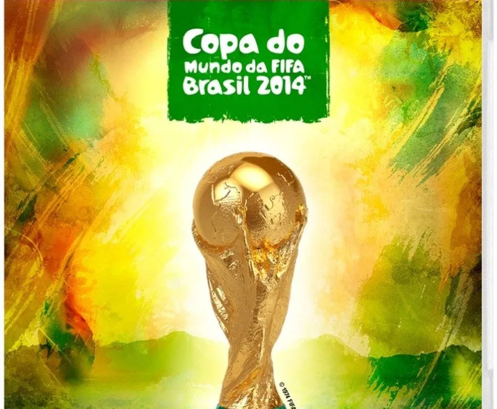

O Brasil recebeu a Copa com muita festa e animação. Foram 12 cidades-sede espalhadas pelo país, como São Paulo,
Rio de Janeiro, Salvador, Fortaleza e Manaus. O país investiu bilhões em estádios modernos e infraestrutura. A
abertura foi em São Paulo, na Arena Corinthians, com um show grandioso e muito colorido.
Nossa campanha foi boa, chegamos nas Semifinais, só que sendo eliminados de forma desastrosa.
Brasil 3x1 Croácia — Jogo de abertura com polêmica, um gol contra e Neymar sendo o herói com 2 gols.
Brasil 4x1 Camarões — Neymar brilhou novamente com 2 gols.
Colômbia 2x1 Uruguai — James Rodríguez marcou um golaço de letra que ficou famoso no mundo todo.
Alemanha 7x1 Brasil — A maior tragédia do futebol brasileiro, semifinal que terminou em humilhação histórica.
Alemanha 1x0 Argentina — Final disputada, com gol de Götze na prorrogação dando o título à Alemanha.